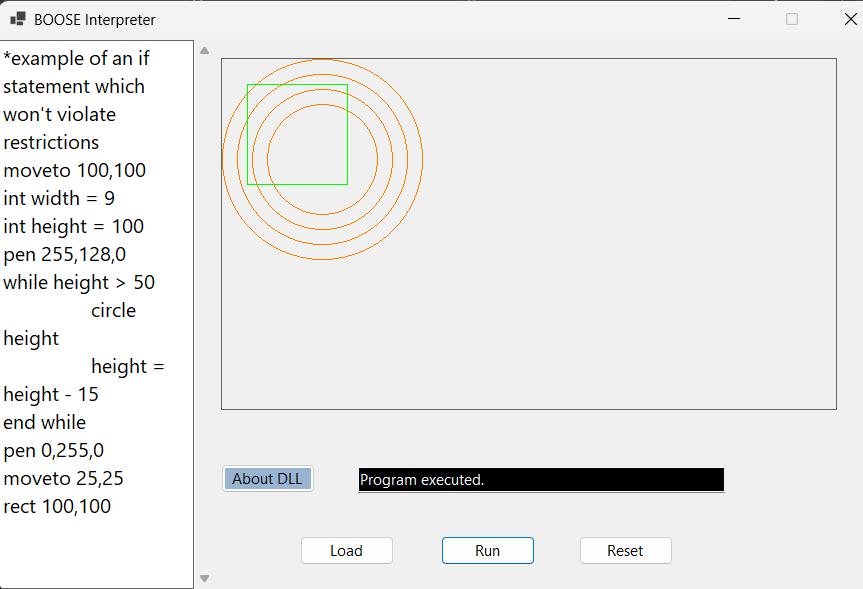
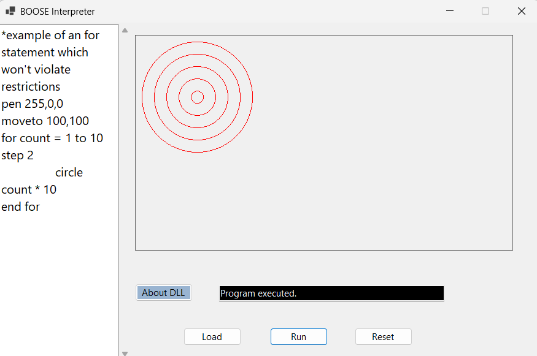

Control Flow: IF,While, For
I replaced all the original BOOSE control flow classes. My interpreter now understands and executes:
- IF / ELSE
Including nested IF statements.


- WHILE loops
Repeats while a condition is true.


- FOR loops
Counts up or down and supports steps (like step 2 or step -2).
